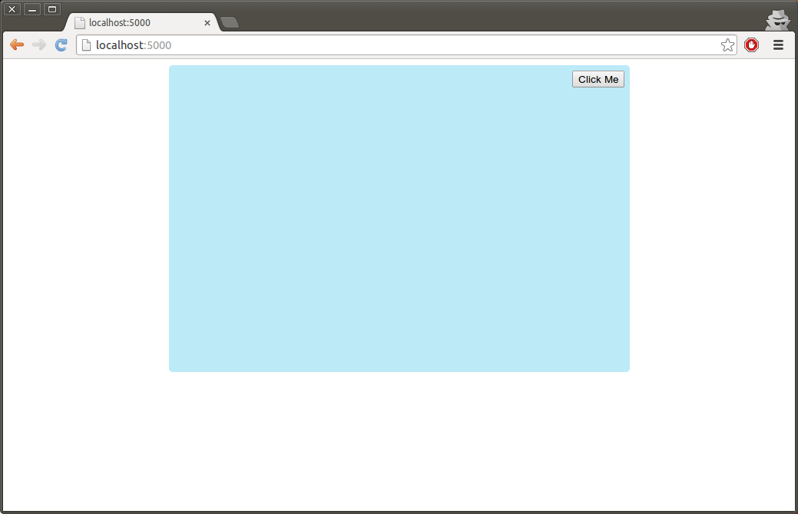
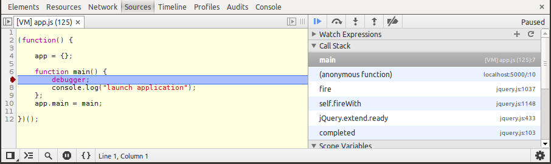
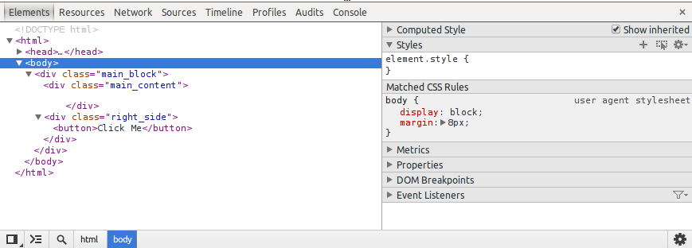
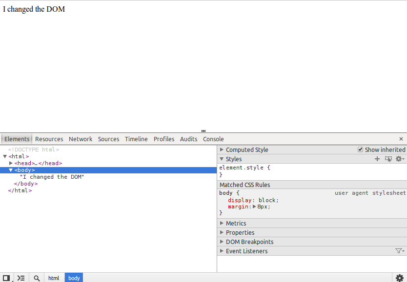

This is now time to stop using the Chrome’s command line interpreter, and start a complete JavaScript application. We provide a basic structure for a sample application that you should download to continue reading this guide. That sample application is located in a Bazaar branch. In the case you don’t have Bazaar installed, you can type this command in your Linux shell:
> sudo apt-get install bzr
Now you can download the sample application using:
> bzr branch lp:~niv-openerp/+junk/basicjssite jstraining -r 1
To demonstrate communication between a JavaScript web application and a server process, that sample application integrates a minimalist Python web server. That web server may require some dependencies to install, you can do it like so:
> sudo apt-get install python
> sudo easy_install flask
You can now launch that Python web application using this command:
> python app.py
Now you should be able to use your web browser to access the web server at the url http://localhost:5000. The web page should look like this:
Let’s take a look at the only HTML file of the application which is located in static/index.html:
<!DOCTYPE html>
<html>
<head>
<link rel="stylesheet" href="static/css/app.css" type="text/css"></link>
<script type="application/javascript" src="/static/js/jquery.js"></script>
<script type="application/javascript" src="/static/js/underscore.js"></script>
<script type="application/javascript" src="/static/js/app.js"></script>
<script type="application/javascript">
$(function() {
app.main();
});
</script>
</head>
<body>
<div class="main_block">
<div class="main_content">
</div>
<div class="right_side">
<button>Click Me</button>
</div>
</div>
</body>
</html>
This web page contains a few HTML elements which are styled by the static/css/app.css css file.
This HTML file also import three JavaScript files. Two of those are well-known libraries in the JavaScript community: jQuery and Underscore. The last JavaScript file, /static/js/app.js is the file that will contain the logic of this application.
The last <script/> block is a little harder to understand:
As stated earlier in this guide, when you simply declare a variable in JavaScript, outside of any function, it will be a global variable:
var my_var = "my value";
This means the my_var variable will be accessible in all the JavaScript files imported by the HTML file. This is generally considered a bad programming style so we will try to avoid it.
Instead we will use what is known as the Module Pattern. It is a pattern used to declare variables and functions that will be local to a file. Here is what it looks like for the app.js file:
(function() {
app = {};
function main() {
console.log("launch application");
};
app.main = main;
})();
We can decompose the Module Pattern this way:
In this module, we only have one public function: main. If you take a look in the HTML file you will see how to call that function:
app.main();
The only thing this function does right now is printing a message in the debugging console.
Like in a lot of dynamic languages, in JavaScript it is very useful for development to be able to debug your code. But, unlike languages like Java or C, most JavaScript editors do not provide a system to mark debug points. This can be replaced with the debugger keyword. Modify your source to add that keyword before the call to console.log():
(function() {
app = {};
function main() {
debugger;
console.log("launch application");
};
app.main = main;
})();
Launch the application and open the developer tools (Ctrl+Shift+I or select Tools > Developer Tools in Chrome’s menu). Now reload the application using F5.
When the developer tools window is shown, Chrome will automatically stop when it reaches a debugger keyword and jump to the Sources tab. Now you can use the debugger’s buttons on the top right to advance step, resume, etc... Also note you can put debugging marks in the debugger by clicking on the line numbers on the left, but this can be less ergonomic if you were editing code in your text editor.
Another noteworthy debugging tool is the console.log() function. It will print messages that can be read in the Console tab of the developer tools.
Underscore.js is a library providing various utility functions for JavaScript. It is heavily used in OpenERP and we recommend you to learn how to use it. Underscore.js functions are all wrapped in a namespace contained in the _ variable.
One the most used function of Underscore is _.each(). As explained in the JavaScript Basics part of this guide, it is considered a bad practice to use the for loop of JavaScript. _.each() is a good replacement for it. Example:
var array = ["hello", "world"]
_.each(array, function(x) {
console.log(x);
});
// outputs:
// hello
// world
The first argument of _.each() must be an array or a dictionary. The second one must be a function. When called with an array as first argument, the function will receive one parameter: the current value of the array.
When called with a dictionary, the function will receive two parameter. The first one is the current value and the second one the current key. Example:
var dict = {"banana": 2, "potato": 3, "apple": 5};
_.each(dict, function(v, k) {
console.log(k, v);
});
// outputs:
// banana 2
// potato 3
// apple 5
Another example of a useful function in underscore is _.range(). It generates a list of numbers:
console.log(_.range(0, 5));
// outputs:
// [0, 1, 2, 3, 4]
Exercise - Usage of Underscore.js
In the main() function of the start application, create a piece a code that will add all numbers from 1 to 100 and print the result in the console. Use _.each() and _.range().
Solution:
(function() {
app = {};
function main() {
var x = 0;
_.each(_.range(1, 101), function(i) {
x += i;
});
console.log("Result", x);
};
app.main = main;
})();
jQuery is a JavaScript library just like Underscore whose main goal is to provide an abstraction layer over the web browser’s API to help common operations and improve compatibility between different browsers. One of the main usages of jQuery is to help the developers to manipulate the HTML displayed in the browser.
The DOM (Document Object Model) is a conceptual representation of the content of the web page. When a JavaScript piece of code wants to modify the visual content of a page it will modify the DOM, and the browser will alter the graphical aspect in consequence.
Use Chrome’s developer tools, you can consult the actual state of the DOM using the Elements tab:
If we execute a simple JavaScript code in the Console tab to modify the DOM, we will see the modifications in the Elements tab as well as in the browser itself. Example:
$("body").text("I changed the DOM")
This piece of code will erase the content of the web page and put the text “I Changed the DOM” instead. You can also see the modifications in the DOM explorer:
If you want, you can also use the Elements tab to modify the DOM. Than can sometimes be useful to test multiple layouts as example.
To select a part of the DOM, we use what is called a jQuery selector. To do so, we call the jQuery method and give it a string as argument:
$("body")
When the jQuery library is loaded in a project, it defines two variables: jQuery and $. These two variables are in reality the exact same thing: the jQuery function. When called with as first argument, it will try to find one or more elements in the DOM that match the given expression.
A lot of readers could already know XPath, which is an language used to define expression to search elements in XML. That language could have been chosen by jQuery’s creators to select HTML elements, but they decided to use another syntax that is more similar to CSS.
To select all elements with a certain tag you can just put the name of the tag in the expression:
$("input") // all <input> elements
$("div") // all <div> elements
To select an element with a precise id you must put the # character in front of the identifier:
$("#content") // the element with id 'content'
The select all the elements that have a precise CSS class you must use the . character:
$(".title") // the elements with the 'title' class
Just like in CSS you can also combine these selectors:
$("span.title") // all <span> elements with the 'title' class
$("#content table") // all <table> elements that are children of the element with id 'content'
When the $() is called, it will return a jQuery object. That jQuery object can be seen as an array with a pointer to all the elements in the DOM that were matched by given expression, except it has a lot of useful methods.
More documentation about the jQuery selectors can be found in the jQuery documentation: http://api.jquery.com/category/selectors/ .
Most HTML elements are able to produce events. jQuery can make it easy to catch these events and execute a piece of JavaScript code. In the following example we catch the click event on the button displayed on the page to print a message in the console:
$("button").click(function() {
console.log("someone clicked on the button");
});
Here we pass a function to the click() method on the jQuery object. When the event is fired, the function will be called. Please note that, if there are multiple elements selected by our call of $(), the click event will be bound to all these buttons.
There is a wide array of events that can be fired, e.g. the mouse passing over an element, the user pushing a key on the keyboard, an <input> element being modified, etc... More documentation about events can be found in the jQuery documentation: http://api.jquery.com/category/events/
jQuery provides many functions that can modify DOM elements.
To replace the content of a jQuery tag and put new HTML inside it, you can use the html() method:
$(".main_content").html('<div style="color: white">Hello world!</div>');
To avoid replacing the whole content and simply add some HTML at the end of the element, use the append() method:
$(".main_content").append('<div style="color: red">Hello world again!</div>');
To do the opposite, put some HTML at the beginning of the element, use prepend():
$(".main_content").prepend('<div style="color: green">Hello world, I am the first one!</div>');
To put some text in an element it is a bad idea to use the html() method, because that text could contain text that looks like HTML and the browser could try to interpret it as real HTML. To avoid that the text must be escaped, this can be done automatically by the text() method:
$(".main_content").text('The <div> element will appear as-is in the browser.');
Exercise - Usage of jQuery
Modify the code of the start application so, when the user click on the button, it counts from 1 to 10 and prints each number on a separate line in the area on the left.
Solution:
(function() {
app = {};
function main() {
$("button").click(function() {
_.each(_.range(1, 11), function(i) {
$(".main_content").append("<div>" + i + "</div>");
});
});
};
app.main = main;
})();
In database-centric applications like OpenERP, JavaScript code needs to communicate with the server. jQuery provides a function to do so.
We will also use the JSON format. JSON stands for JavaScript Object Notation. It is a lightweight format used to encode data to be exchanged between different computers. Due to its simplicity, it is very easy to implement in any programming language and the vast majority of existing programming languages already have one or more implementations of a JSON reader/writer. Here is a simple example that demonstrates the totality of JSON data types:
{
"string": "this is a string",
"number": 42,
"array": [null, true, false],
"dictionary": {"name": "a simple dictionary"}
}
To test the HTTP requests in JavaScript, we will use the app.py Python application that contains some JSON web services:
@app.route('/service_plus', methods=["POST"])
def service_plus():
data = flask.request.json
a = data["a"]
b = data["b"]
delay = data.get("delay", 0)
time.sleep(delay)
return flask.jsonify(**{
"addition": a + b,
})
@app.route('/service_mult', methods=["POST"])
def service_mult():
data = flask.request.json
a = data["a"]
b = data["b"]
delay = data.get("delay", 0)
time.sleep(delay)
return flask.jsonify(**{
"multiplication": a * b,
})
It would be out of the scope of this guide to explain how works the Flask Python library which is used to create these web services in Python. Just remember that this code declare two URLs that accept and return JSON and perform simple mathematic operations (addition and multiplication). We will code some JavaScript that contact these web services.
The method used to perform an HTTP request in jQuery is the $.ajax() method. The AJAX acronym meaning Asynchronous JavaScript and XML, a name which loosed its signification nowadays because developers use it to send other data than XML. Anyway, that term is still used in jQuery’s documentation.
Here is an example which will call the /service_plus web service:
$.ajax("/service_plus", {
type: "POST",
dataType: "json",
data: JSON.stringify({
"a": 3,
"b": 5,
}),
contentType: "application/json",
}).then(function(a) {
console.log("3+5=", a.addition);
});
The first argument of $.ajax() is the URL to send the request.
The second argument is a dictionary that can contains a lot of parameters. Here are the parameters we use:
JavaScript objects instead of a simple string. * data is the data we send to the server. Here we want to send a JSON string containing a dictionary with two keys ‘a’ and ‘b’. We have to call the method JSON.stringify, a standard method in JavaScript to convert objects to JSON strings. * contentType is the MIME type of the data we send to the server. The value we use informs the server that we are sending JSON.
The $.ajax() returns what is called a promise. Promises are objects created by jQuery that we will explain later. For now, just understand that when we call the then() method on that promise it will bind a function to be called when we receive the result from the server. That first argument of that function is the JSON object returned by the /service_plus web service.
The $.ajax() contains a lot more parameters to send any type of HTTP requests. To know more about them, please read jQuery’s documentation: http://api.jquery.com/jQuery.ajax/ .
As a language (and runtime), JavaScript is fundamentally single-threaded. This means any blocking request or computation will block the whole page (and, in older browsers, the software itself even preventing users from switching to an other tab): a JavaScript environment can be seen as an event-based runloop where application developers have no control over the runloop itself.
As a result, performing long-running synchronous network requests or other types of complex and expensive accesses is frowned upon and asynchronous APIs are used instead.
Asynchronous code rarely comes naturally, especially to developers used to synchronous server-side code (in Python, Java or C#) where the code will just block until the deed is gone. This is compounded by asynchronous programming not being a first-class concept and being implemented using callbacks-based programming, which is the case in JavaScript.
This part will provide some tools to deal with asynchronous systems, and warn against common issues and pitfalls.
Deferreds are a form of promises. OpenERP Web currently uses jQuery’s deferreds.
The core idea of deferreds is that potentially asynchronous methods will return a Deferred() object instead of an arbitrary value or (most commonly) nothing. Deferreds can be seen as a promise to a value or error. This object can then be used to track the end of the asynchronous operation by adding callbacks onto it, either success callbacks or error callbacks.
A great advantage of deferreds over simply passing callback functions directly to asynchronous methods is the ability to compose them.
Deferreds’s most important method is $.Deferred.then(). It is used to attach new callbacks to the deferred object. The first parameter attaches a success callback, called when the deferred object is successfully resolved and provided with the resolved value(s) for the asynchronous operation.
$.ajax(...).then(function(a) {
console.log("Asynchronous operation completed, the value is:", a);
});
The second parameter attaches a failure callback, called when the deferred object is rejected and provided with rejection values (often some sort of error message).
$.ajax(...).then(function(a) {
...
}, function() {
console.error("The asynchronous operation failed");
});
Callbacks attached to deferreds are never “lost”: if a callback is attached to an already resolved or rejected deferred, the callback will be called (or ignored) immediately.
To demonstrate this we can create our own $.Deferred instance and call the resolve() method to resolve it:
var def = $.Deferred();
def.resolve();
def.then(function() {
console.log("operation succeeded");
});
// the message "operation succeeded" will appear, even if the deferred was already resolved when we call then()
A deferred is also only ever resolved or rejected once, and is either resolved or rejected: a given deferred can not call a single success callback twice, or call both a success and a failure callbacks. Example:
var def = $.Deferred();
def.then(function() {
console.log("operation succeeded");
});
def.resolve();
def.resolve();
// the message "operation succeeded" will appear only once in the console, because the second call to resolve()
// will not make the deferred call its binded functions a second time
Deferreds truly shine when code needs to compose asynchronous operations in some way or other, as they can be used as a basis for such composition.
There are two main forms of compositions over deferred: multiplexing and chaining.
The most common reason for multiplexing deferred is simply performing 2+ asynchronous operations and wanting to wait until all of them are done before moving on (and perform more operations).
The jQuery multiplexing function for promises is $.when(). This function can take any number of promises and will return a new promise. This returned promise will be resolved when all multiplexed promises are resolved, and will be rejected as soon as one of the multiplexed promises is rejected.
var def1 = $.ajax("/service_plus", {
type: "POST",
dataType: "json",
data: JSON.stringify({
"a": 3,
"b": 5,
}),
contentType: "application/json",
});
var def2 = $.ajax("/service_plus", {
type: "POST",
dataType: "json",
data: JSON.stringify({
"a": 6,
"b": 7,
}),
contentType: "application/json",
});
$.when(def1, def2).then(function(result1, result2) {
console.log("3+5=", result1[0].addition);
console.log("6+7=", result2[0].addition);
});
The arguments given to the function bound to the promise returned by $.when() are a little complicated. For each promise passed to $.when(), the function will receive a parameter. Each parameter is an array containing all the parameters that would have been passed to a function bound on the original deferred. So, if we want the first parameter of that function we have to use result1[0].
A second useful composition is starting an asynchronous operation as the result of an other asynchronous operation, and wanting the result of the second one.
To do so, the function you bind to the deferred using then() must return another deferred. Example:
var def1 = $.ajax("/service_mult", {
type: "POST",
dataType: "json",
data: JSON.stringify({
"a": 3,
"b": 5,
}),
contentType: "application/json",
}).then(function(result) {
var def2 $.ajax("/service_mult", {
type: "POST",
dataType: "json",
data: JSON.stringify({
"a": result.multiplication,
"b": 7,
}),
contentType: "application/json",
});
return def2;
});
def1.then(function(result) {
console.log("3*5*7=", result.multiplication);
});
To understand why this works, it is important to know that then() returns a new promise. That promise represents the result of the execution of the given function after the deferred was resolved. If the bound function returns a new promise the result of the call to then() becomes an equivalent of that new promise. So, in the code above def1 and def2 are promises which will be resolved at the same time and with the same arguments (except if the first call to ajax() fails, in that case the second call to ajax() will never happen and def2 will be marked as rejected).
In real-world situations asynchronous calls can result in fairly complex code: big programs can call hundreds of functions. Even if only a small number of those functions perform asynchronous operations they will affect the whole program. This is why jQuery’s deferreds are very useful: they provide a generic structure for asynchronous code execution and, thanks to deferreds composition, it becomes possible to simplify any situation to a single deferred.
A simple practice to remember when using deferreds is to always return a deferred in all functions that perform asynchronous operations. This is due to the fact that any other function calling that function could need to know when it has finished.
function func1() {
var def1 = $.ajax(...); // A first call to the server.
var def2 = $.ajax(...); // A second call.
var def3 = $.when(def1, def2); // We multiplex all that.
var def4 = def3.then(...); // Some more complexity: we chain it.
// Now we don't forget to return a deferred that represents the complete operation.
return def4;
};
function func2() {
var def = func1(); // We want to call func1().
// Now if I need to know when func1() has finished all its operations I have a deferred that represents that.
var def2 = def.then(...);
// And finally we don't forget to return a deferred because func2() is, by transitivity, a function
// that performs an asynchronous call. So it should return a deferred too.
return def2;
};
Exercise - Usage of Deferreds
Create a function that takes 4 parameters: a, b, c and d. It must return a deferred resolved with the result of the mathematical operation (a + b) * (c + d). Do not use any of the mathematical operators of JavaScript, you must use the /service_plus and /service_mult web services and combine deferreds properly to return a single deferred with the result of the whole operation.
Solution:
(function() {
app = {};
function main() {
$("button").click(function() {
plusmultplus(1, 2, 3, 4).then(function(result) {
console.log("(1+2)*(3+4)=", result.multiplication);
});
});
};
app.main = main;
function plusmultplus(a, b, c, d) {
var def1 = $.ajax("/service_plus", {
type: "POST",
dataType: "json",
data: JSON.stringify({
"a": a,
"b": b,
}),
contentType: "application/json",
});
var def2 = $.ajax("/service_plus", {
type: "POST",
dataType: "json",
data: JSON.stringify({
"a": c,
"b": d,
}),
contentType: "application/json",
});
return $.when(def1, def2).then(function(result1, result2) {
return $.ajax("/service_mult", {
type: "POST",
dataType: "json",
data: JSON.stringify({
"a": result1[0].addition,
"b": result2[0].addition,
}),
contentType: "application/json",
});
});
};
})();